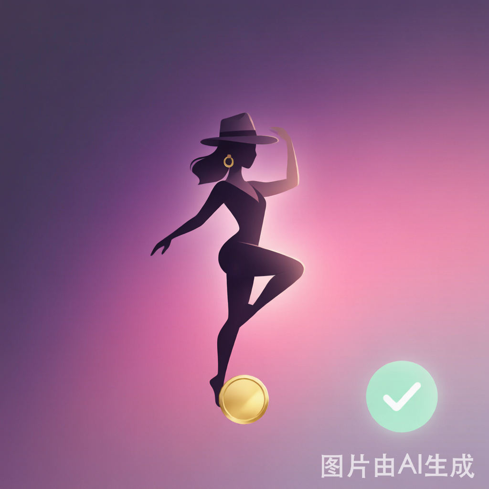
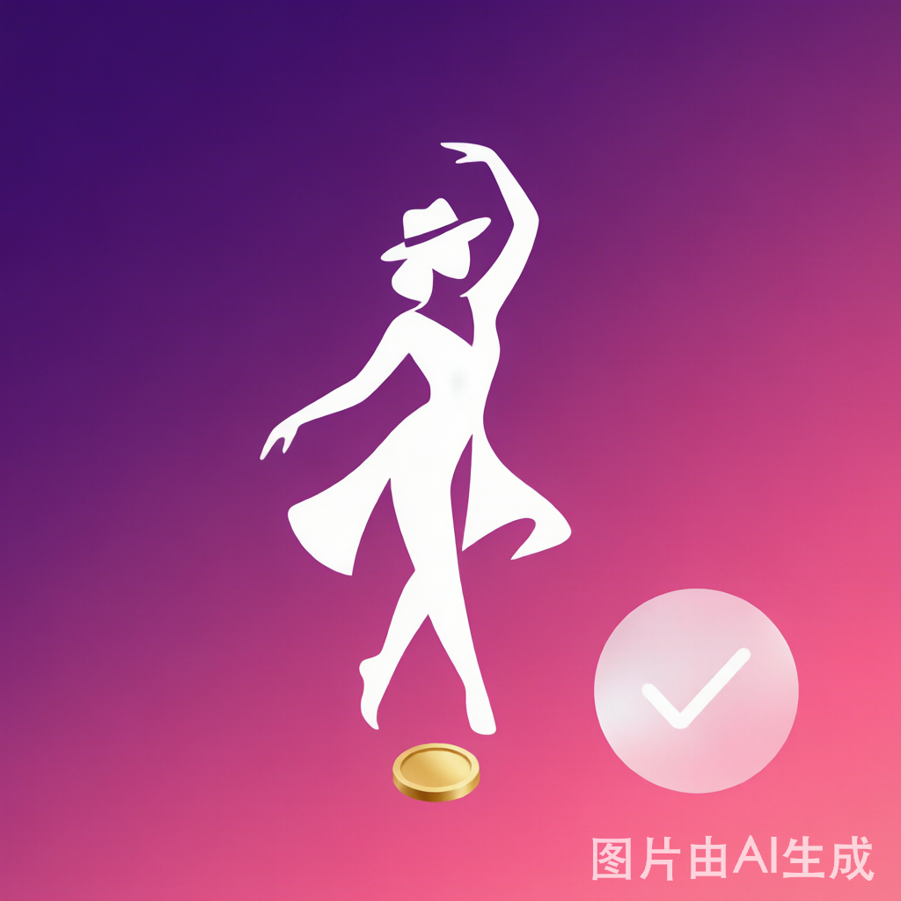
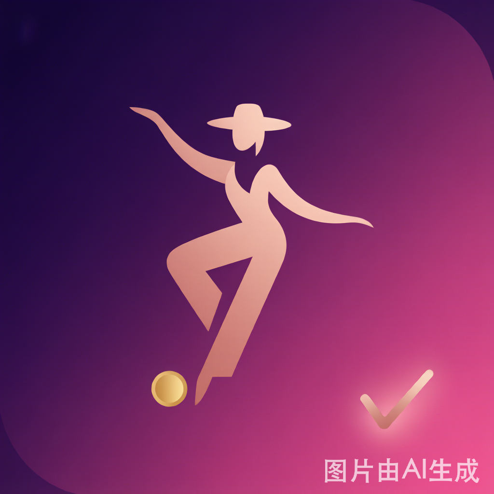

方案 A · 打勾协调版对比
底图都是紫粉爵士舞者 + 金币，只改了右下角打勾的处理，让它更融入、不扎眼

G1 · 柔和薄荷绿
低饱和、半透明柔光的薄荷绿小圆勾，保留"绿=完成"的直觉，但存在感降低，和紫粉背景更和谐。

G2 · 极简白线
半透明珍珠白圆 + 细细的白勾，几乎"隐形"地融入背景，最克制、最不抢戏，整体更高级。

G3 · 香槟玫瑰金
低对比的玫瑰金/香槟金细勾，和金币、粉紫同属暖色系，呼应统一，温柔不突兀。
你看哪个最顺眼？直接回复我
「选 G1 / G2 / G3」
，我立刻缩放成 192×192 + 512×512 替换上线。